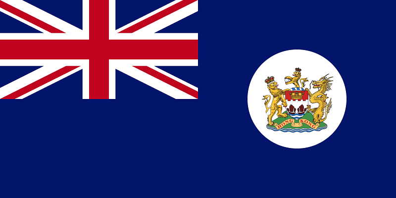

About Me
Hi, I'm Matt. I'm 25 years old living in Victoria, BC, Canada. I'm currently studying with Codecademy to enhance my skills as a web developer. I studied Computer Science at the University of Hertfordshire in England and obtained a diploma of higher education in 2018. My main hobby is football, also known as soccer in this part of the world. I regularly wake up at 6am to watch my team lose more often than not and I'd never change it for the world! As they say, you can change your friends, change your wife but you can never change your football team.
Below is a timeline of my journey here on planet Earth since my life began in 1996. Click the 'View' button below to see more!

Born in Hong Kong in 1996.

I moved to England in 1997, living 25 miles south of London. I grew up in England and left when I was 20 years old in 2016.
I moved to British Columbia, Canada for 1 year in 2016-2017 as an exchange student, studying at Vancouver Island University in Nanaimo.

I returned to England from Canada for 6 months, before moving to Australia in early 2018. After travelling the east coast, I eventually settled in Sydney, NSW.
After almost a year in Australia I moved to Auckland, New Zealand in late 2018. I lived in New Zealand until May 2019.
After some travelling throughout the summer I moved back to British Columbia, Canada in August 2019. I settled in Victoria which is where I currently reside. I'm now a permanent resident of Canada and I plan on getting my Canadian citizenship!